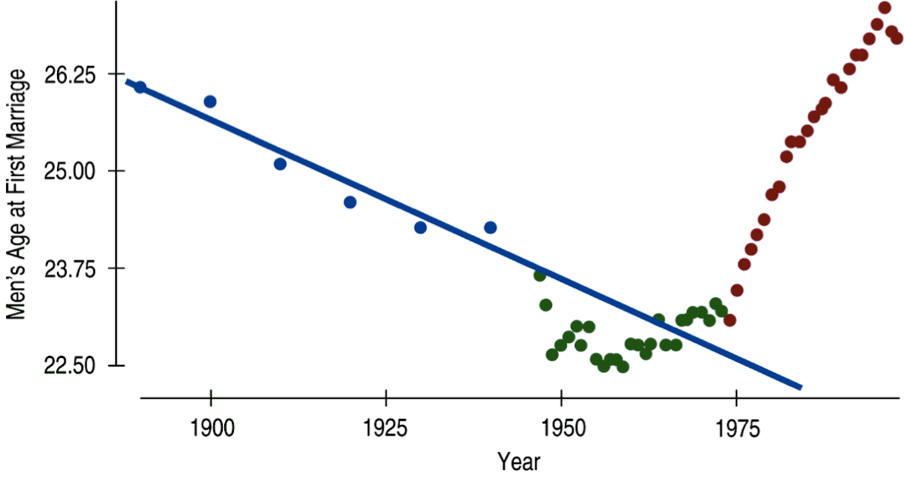
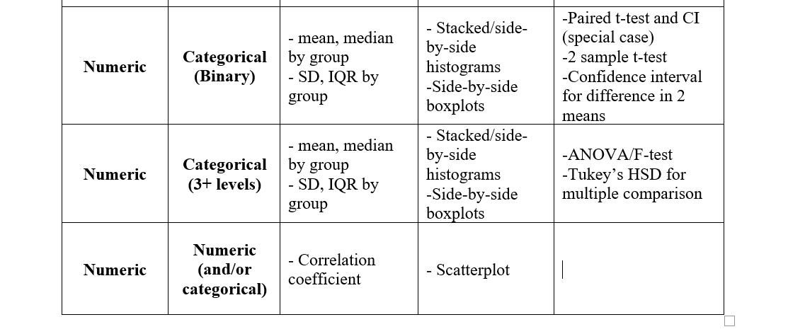

The Setup
So you’ve identified two numeric variables that seem to have a moderate to strong linear pattern. How can you find you find the best fitting line? “Eyeballing it” just isn’t going to cut it. We need a more precise way.
We can use the idea of residuals to quantify what “best line” means for modelling data.
Slope and intercept for the best line can easily be estimated using simple summary statistics (or R).
Predictions for new observations can then be made from our regression model.
Most important
We will be able to interpret the slope coefficient for our best fitting linear regression equation. Why is this so important? Because we don’t want to lose sight of the original purpose of ANY statistical analysis: defining patterns and relationships.
The slope of a linear regression line is a way to represent the relationship between response and explanatory variables. It will be the most important aspect of the regression model and what we focus on for interpretation and inference.
A note about conditions
There are conditions to using linear regression, some very familiar and one new. The conditions are listed below, however, linear regression is one of the few methods of analysis where it is easier to check the conditions after the model has been found. So I will talk more about these in the next tutorial.
Linearity
Nearly Normal residuals
Constant variance
Independent observations
Least Squares Regression
Recall from the last tutorial that residuals are the leftovers from a model, the error between an observed and predicted value.

It would make sense then, that the best line for any given scatterplot, is the one that minimizes all of the residuals. This is the idea behind Least Squares Regression, a method for finding that best line. We won’t get into the technical details of how least squares regression works, but I want to cover just the basic concept:
We consider many potential lines for the best line (each with different slope and intercept)
- technology allows us to consider ALL potential lines at the same time
We square all of the residuals for each line
- residuals are squared so they all become positive, and so we can give a bigger ‘penalty’ to points that are really far from the model
The line that gives us the smallest sum of all squared residuals is our best model for the data.
- hence the name, least squares regression
I think there is a benefit to visualizing this process. Watch the video below of me walking you through different lines for a dataset and see the squared residuals change. Then you can follow the link provided to play around yourself.
Estimating the Equation
\[\hat{y}=\beta_0+\beta_1\cdot x\]
This is our Least Squares Regression equation. We need to think about the intercept (\(\beta_0\)) and slope (\(\beta_1\)) as parameters for us to estimate using sample data. We estimate the intercept and slope with \(b_0\) and \(b_1\) respectively. So the estimated regression equation is:
\[\hat{y}=b_0+b_1\cdot x\]
For the most part, we will get these estimates using R, but there is a simple way to find them with just the sample standard deviations and the correlation coefficient. First we estimate the slope:
\[b_1=\frac{s_y}{s_x}\cdot R\]
And once we have that, we can find the intercept with the sample means and slope estimate:
\[b_0=\bar{y}-b_1\cdot \bar{x}\]
Try it out
Give it a shot using the summary statistics below from the HS grad rate and Poverty level example.

Interpreting Slope and Intercept
One important thing to remember when writing or talking about your regression equation (or any analysis) is to put context to the numbers. Your equation should never actually use the letters \(y\) and \(x\). And you should never give a generic interpretation of the intercept and slope.
I may use \(x\) and \(y\) in examples and to illustrate a point, but when you’re using real data, those are just letters that don’t mean anything. In the previous example, I would not accept a regression equation like this:
\[\hat{y}=64.68-0.62\cdot x\]
I’d much rather have you write:
\[\widehat{\text{% in poverty}}=64.68-0.62\cdot \text{% HS grad}\]
Slope interpretation
This is the big one, the one that explains the entire relationship between the response and explanatory variables. This is the only time you will see me give you a generic interpretation. For any dataset, fill in the blue parts with the appropriate context.
For an increase of one unit in the explanatory variable, we can expect that the response variable will change by the amount of the slope coefficient value.
Notice that the amount we increase \(x\) is not blue, meaning you should always interpret the slope as the change in \(y\) for one increase in \(x\). You can also make the interpretation sound a little nicer than what I have up there, but it’s a starting point.
Intercept interpretation
Although typically less important for the understanding of the relationship, we can still interpret the intercept. Once again, fill in the blue text for the generic interpretation below with the data context.
When the explanatory variable is zero, we can expect the response variable to be equal to the intercept value.
Notice that the intercept always describes \(y\), when \(x=0\). Also take note that in real data, it will often not make much sense for the explanatory variable to be zero. This leads to an intercept interpretation that sounds like non-sense. It’s fine, we do need the intercept in order to define our line, but we don’t need it to make sense in the context of the problem.
Introducing \(R^2\)
We will talk about one more numeric statistic for understanding linear regression models better, \(R^2\). Remember the correlation coefficient, \(R\)? Well, \(R^2\) is just what you might expect, the correlation squared. This means that \(R^2\) must be between 0 and 1.
\[R^2=(R)^2=correlation^2\]
This is a very useful statistic as a measure of the “model fit”, or how well the points in the scatterplot actually form a line. The stronger the linear relationship \(\Rightarrow\) the closer the correlation is to -1 or 1 \(\Rightarrow\) the closer \(R^2\) is to 1 \(\Rightarrow\) the better the model fits the data.
Another way to think bout \(R^2\) is as the proportion of variability in the response variable that is explained by the linear model. Naturally, we would like our model to explain as much variability as possible, so we like it when \(R^2\) is closer to 1. Any leftover variability is just unexplained and unknown.
Remember that the correlation from the previous example is \(R=-0.75\). Calculate the \(R^2\) value.


Using the Model
Interpreting Predictions
Other than defining the relationship between response and explanatory, the regression model is useful for making predictions. This is one of the most interesting parts of linear regression, where you get to test out your model and see how well it performs in the real world.
Take the previous example, if we know that the high school graduation rate for 2016 (most currently available data) in Minnesota was 82.2%, what can we expect the poverty rate to be that year?
BEWARE!
While predictions are fun and interesting, you need to be mindful about making predictions beyond the information you have. Never make a prediction using a value of the explanatory variable outside the range of values that was observed. This is a major risk and is called Extrapolation.
The relationship in the observed data may be linear, you there is no guarantee that the linear pattern extends before or after what was observed.
What is the average age of men’s first marriage would you predict for 1960 using this data? 1990? 2020?

Be careful not to extrapolate the model and make predictions past what was observed. This is especially true when dealing with time as an explanatory variable. Trends change and cycle, we wouldn’t expect the pattern to stay as a negative relationship or else average age at first marriage would eventually be 0 or even negative!

Example in R
Used car prices
Can you predict the price of a used Porsche by only using the mileage? The data below contains the price and mileage of 30 used Porsches. Note that the Price is measured in thousands of dollars and Mileage is measured in thousands of miles.
porsche <- read.csv("~/Stats 212d F20/Class/Data/PorschePrice.csv")
porsche
EDA: Summarize and visualize
Plot the variables and find the correlation coefficient. Plug in the appropriate variables in the code.
gf_point(_______ ~ _______, data = porsche)
cor(porsche$______, porsche$______)Find the line
What is the best line to describe the relationship between Price and Mileage? Use lm() (for ‘linear model’), this function uses arguments in the Response ~ Explanatory, data = dataset_name form.
Just like we did for ANOVA, we will want to save the model as a named object in R so we can refer to it later and pull out more information. You can use any name for your model. Try to fit the linear regression line and get the slope and intercept estimates for the Porsche data.
# Fit the best line
fitline <- lm(________ ~ ________, data = ________)
# Get the slope, intercept, and other important information
summary(________)# Fit the best line
fitline <- lm(Price ~ Mileage, data = porsche)
# Get the slope, intercept, and other important information
summary(fitline)There are plenty of different ways to make scatterplots and add the regression line, but I think this is one of the simplest. (Be sure you load the mosaic package before using any gf_ functions.)
# Plot the points and the line
gf_point(Price ~ Mileage, data = porsche) %>%
gf_lm()Interpret the values
\[\widehat{\text{}Price}=71.1-0.59\cdot \text{Mileage}\]
Think about how you would interpret the intercept and slope. Do they make sense in the context of the problem?
Make a couple predictions
\[\widehat{\text{}Price}=71.1-0.59\cdot \text{Mileage}\]
I’m in the market for a used Porsche (OK, not really), and I found a few different options. What should sort of offers should I make on the following cars? Use the code box for calculations if you’d like.
Bonus Time
Feel free to create a linear regression model for the relationship between Price and Age of used Porsches, or Age and Mileage. I think for this particular dataset you could create a reasonable research question where any variable is the response or explanatory. Play around and get some practice.
